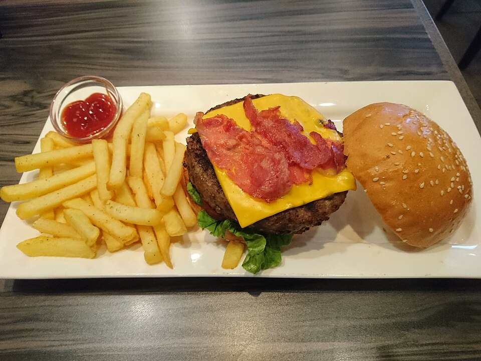

Scratch Tavern Kitchen
Hand-ground double smash burgers, prime flat iron steak frites, golden beer-battered fish, and crispy buttermilk wings served fresh until late.
Explore Kitchen Craft →Welcome to The Public House, Uptown Charlotte’s premier destination for elevated tavern classics, premier sports viewing, and handcrafted cocktails. Located at 300 South Brevard Street—steps from the Charlotte Convention Center, Spectrum Center, and LYNX light rail—we serve prime Steak N' Frites, the double-patty Remedy Burger, Asian loaded tots, and hand-carved ice Old Fashioneds well past midnight.

Butcher-cut prime meats, high-energy sports viewing, and artisan bar craft.
Hand-ground double smash burgers, prime flat iron steak frites, golden beer-battered fish, and crispy buttermilk wings served fresh until late.
Explore Kitchen Craft →State-of-the-art HD displays, energetic pre-and-post game gatherings for Hornets and Panthers matchups, and lively weekend night hours until 2:00 AM.
Discover Sports Lounge →Small-batch Kentucky whiskeys, hand-carved crystal ice spheres, smoked Old Fashioneds, cold espresso martinis, and crisp Carolina craft draft beers.
View Cocktail List →Open daily for afternoon happy hour, dinner, game-day viewing, and late-night drinks. Walk-ins welcome; convenient Uptown transit and parking access.
Hours, Transit & Directions →